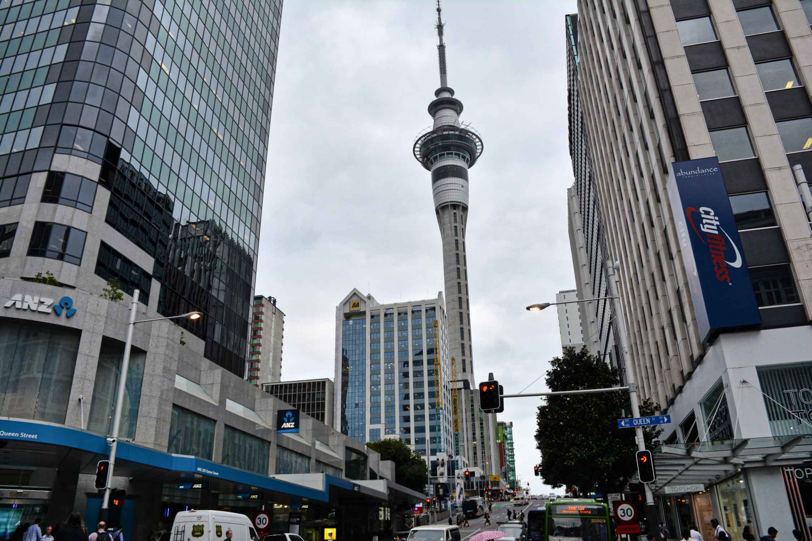
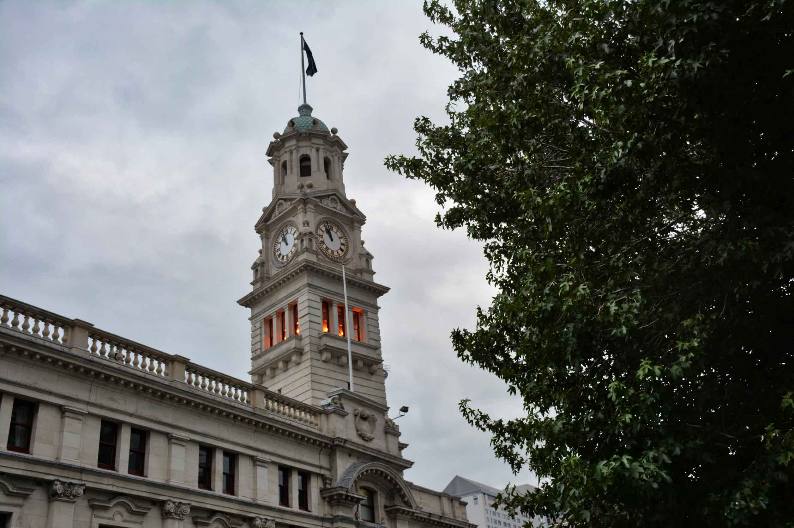
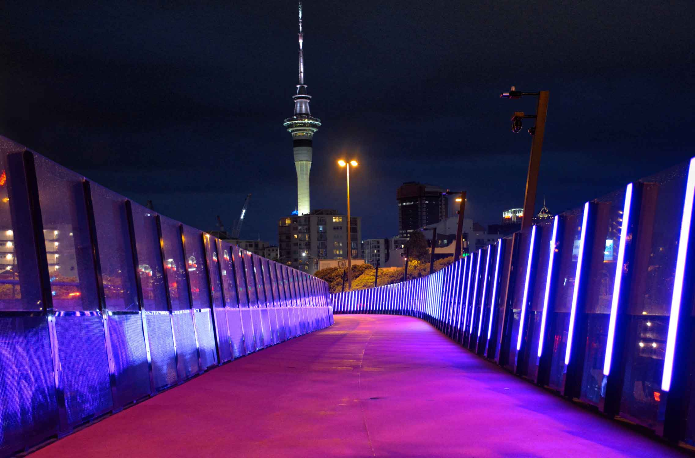

Auckland es la ciudad más importante de Nueva Zelanda a pesar de no ser la capital del país. Con una población cercana al millón y medio de habitantes, es la principal ciudad del Pacífico Sur.
La Sky Tower es el emblema de Auckland. Con 328 metros de altura domina y anima el skyline de la ciudad y es uno de los edificios más altos del hemisferio sur. Esta torre de comunicaciones es súper divertida. Allí podrás hacer un montón de actividades: apreciarla desde alguno de los miradores de la ciudad, subir a su plataforma de observación, ¡hasta saltar al vacío!
Esta zona es una de las más animadas de la ciudad. Especialmente por la noche. Allí encontrarás una gran cantidad de bares y restaurantes donde salir a cenar o a tomar algo frente al mar. Además vas a darte cuenta porque le llaman la ciudad de las velas.
Llévate la cámara al puerto porque desde allí tendrás unas vistas espectaculares de la ciudad. Da igual la hora que sea y el tiempo que haga. La vista es preciosa.
Hay una ruta que cruza de costa a costa. Apenas tiene nueve kilómetros de
norte a sur y menos de dos kilómetros de este a oeste. Históricamente los
maoríes se aprovecharon de esta corta distancia para portar canoas: desde
el puerto de Waitemata y el Océano Pacífico por un lado, hasta el puerto de
Manukau y el mar de Tasmania por el otro.
Sin duda, una de las cosas más curiosas que hacer en Auckland. El camino te
llevará por paisajes preciosos, además de la experiencia de haber ido de
costa a costa. Así que si tienes tiempo en Auckland, dedícale un día.
El diseño de este pabellón de eventos es especial. Se construyó para albergar una zona de hospitalidad durante la Copa del Mundo de Rugby de 2011, el deporte nacional. ¡Además la ganaron! Así que de una forma u otra, habrán amortizado los 7,9 millones de dólares neozelandeses que costó su construcción.
Auckland es una ciudad súper curiosa ya que se encuentra rodeada de volcanes.
Se construyó sobre un campo volcánico con 48 conos, aunque la mayoría están
extintos.
Así que mires donde mires, verás un volcán. Y si vas al Monte Eden, podrás
subir hasta el cráter y apreciar unas vistas estupendas de la ciudad. Se puede
llegar perfectamente a pie desde el centro de la ciudad. Pasarás por zonas
residenciales preciosas y el paseo merece la pena.
Queen Street es la arteria comercial de la ciudad. Así que si no encuentras lo que buscas en Queen Street, no lo encontrarás en ningún otro sitio de Auckland. Existe una gran multiculturalidad que se aprecia en esta calle. Verás tiendas regentadas por gente de un montón de países distintos.
Es uno de los edificios más bonitos de la ciudad. Se encuentra en Queen Street y se usa como sede de las funciones administrativas de Auckland. Seguramente vas a pasar muchas veces por esta calle, ¡así que no te lo saltes!
Lonely Planet valoró su helado como el mejor del mundo. No esperes encontrar
un helado convencional, ya que han cambiado el significado del helado por
completo. Es una experiencia única, más parecida a visitar un museo o una
galería de arte. Puedes probar los helados antes de comprar y los dependientes
te explicarán todo el menú. Incluso puedes poner helado encima de patatas
fritas o en el delicioso pan tradicional Maorí de Nueva Zelanda.
Un montón de famosos como los All Blacks, los jugadores de baloncesto de la NBA,
incluso la fabulosa Cher, han visitado esta heladería. Giapo es toda una
institución de Auckland y una visita obligada en Nueva Zelanda para los
amantes del dulce. Pásate por el número 12 de Gore Street para probar unos
helados muy especiales.
Es la catedral católica de Auckland. Se creó en 1841 para atender a los aproximadamente 400 cristianos que había en Auckland (la mayoría irlandeses). Posteriormente, se reformó y esa pequeña iglesia de madera pasó a ser la preciosidad que podemos disfrutar hoy.
Se encuentra literalmente a dos calles del puro centro de Auckland. Allí podrás pasear contemplando los rascacielos de la ciudad o sentarte en uno de sus bancos y relajarte. Sin duda, dar una vuelta por allí es una de las mejores cosas que hacer en Auckland.
En una de las esquinas del parque se encuentra uno de los museos más importantes de la ciudad. Si te gusta el arte, no puedes perdértelo, especialmente la colección de retratos y pinturas maoríes.
Una excursión de un día imprescindible para los amantes de la naturaleza que hacer en Auckland es coger el ferry hasta Tiritiri Matangi. Esta preciosa isla es hogar de más de 70 especies de pájaros, además de tener una vegetación abundante, senderos ideales para disfrutarla y Hobbs Beach, una playa de agua cristalina genial para los días de verano. Se tarda 75 minutos en ferry desde la ciudad.
Si buscas una escapada de un día más tranquila pero con buenos paisajes, Waiheke
es tu isla. Es conocida por la multitud de bodegas que ha para hacer catas de
vinos. Si a eso le sumamos buenos restaurantes con vistas preciosas a la costa,
ir a Waiheke es un imprescindible que hacer en Auckland para los amantes del
buen comer.
Las playas no tienen nada que envidiar a las de Tiritiri Matangi. Además están
mejor habilitadas con zonas de juego infantil y barbacoas. También hay senderos
con vistas preciosas a las playas. El viaje dura 40 minutos.
Por último, si te apetece conocer los alrededores de Auckland pero no tienes mucho tiempo, Devonport es una excursión que te llevará solo unas horas. Se trata de un pueblito de estilo victoriano con muchas tiendas y restaurantes muy monos. No puedes dejar de visitar el mirador del monte Victoria. Tiene una vista estupenda del skyline de Auckland, nuestra favorita. El trayecto en ferry hasta Devonport apenas dura 10 minutos.
Desde 1880, el Domain es el parque por excelencia en el centro de la ciudad. Lo que empezó como un lago rodeado de plantaciones exóticas para hacer algunos experimentos se ha convertido en una gran zona verde diseñada para que los visitantes pasen un rato entretenido. Hay campos de distintos deportes, un caminito preciosos rodeando en lago, senderos para correr o ir en bici y grandes explanadas ideales para tomar el sol o hacer un picnic.
Es un museo muy completo. Allí podrás ver exposiciones de arte y cultura maorí, una parte dedicada a las ciencias naturales que muestra cómo se creó esta parte de la tierra y también una sección que habla de los volcanes. Finalmente, en el último piso encontrarás una sección dedicada a las guerras en las que intervino el país.
También en el mismo parque puedes ver dos preciosos invernaderos de cristal de estilo Victoriano. Se diseñaron a principios del siglo pasado y en su interior hay todo tipo de plantas y flores muy coloridas. Uno de ellos está climatizado para albergar especies tropicales, mientras el otro va variando su exposición.
El parque favorito de los locales para desconectar es Cornwall Park. Tiene todo
lo necesario para pasar un día relajado: zona de picnic, barbacoas, parque
infantil, senderos entre la naturaleza y un restaurante. No solo eso, sino
que allí puedes ver el edificio de madera más antiguo de la ciudad, Acacia
Lodge. Incluso hay una granja con más de 600 ovejas y 80 vacas para trasladarte
a una zona rural.
Si no dispones de coche, puedes llegar hasta allí con el autobús 309 o 312.
No nos olvidamos de la zona más conocida del parque Cornwall. Se trata del
monte Maungakiekie, un antiguo volcán que entró en erupción hace nada más
y nada menos que 67.000 años. En su cima, a 182 metros de altura, se tienen
unas vistas panorámicas.
El obelisco que hay en la cumbre es un homenaje a los maoríes. También hay
la tumba de John Logan Campbell, quien donó la tierra a la ciudad en 1901
para homenajear a dicha comunidad. Para llegar a la cima hay un caminito
de tierra corto pero bastante empinado. Si no llevas zapatillas deportivas
es mejor que vayas por la carretera, un camino más largo pero más cómodo.
Otro monte volcánico que ver en Auckland se formó por una erupción hace 10.000 años. El monte Wellington es el más joven de la ciudad. Aunque parezca que 10.000 años son muchos, fue la erupción más reciente. Es un buen sitio para hacer una caminata reconfortante por las vistas de la cima.
Esta isla recibe el nombre de su volcán, el más joven de los 48 que tiene
Auckland. Además tiene una forma muy característica, que se puede apreciar
desde varios puntos de la ciudad.
Es un destino bastante frecuente para los amantes del senderismo. Puedes
subir hasta su pico, a 259 metros sobre el nivel del mar. Así que tendrás
unas vistas estupendas de Auckland y el Golfo de Hauraki. Esta ruta, que
es la más popular, tiene una duración aproximada de una hora.
Para llegar a Rangitoto, la mejor opción es hacerlo con el ferry de la
compañía Fullers. Tardarás 25 minutos desde el puerto de Auckland.
Una de las cosas más curiosas que hacer en Auckland es acercarse a este carril bici. Es especial porque la el asfalto está pintado de color fucsia y por la noche queda muy bonito, especialmente con las vistas del skyline al fondo.
Es uno de los barrios más pintorescos de Auckland. Es una zona súper tranquila, lejos del bullicio de Queen Street y el Downtown de Auckland. En este barrio encontrarás muchísimos restaurantes, cafés y galerías de arte. Es auténtico, con varios comercios locales y merece la pena que lo visites. Fíjate especialmente en la belleza de sus edificios. Sin duda, una visita diferente que hacer en Auckland.
Como hemos dicho, Auckland cuenta con muchos espacios donde relajarse. Y este jardín de rosas es uno de los favoritos por la gente. Allí encontrarás una gran variedad de rosales coloridos y perfectamente cuidados, perfectos para relajarte. Y si tienes tiempo, al salir piérdete por el barrio de Parnell.
A solo 40 minutos en coche de la ciudad entenderás que la mayor joya de Nueva Zelanda es su naturaleza. El parque regional Waikatere Ranges tiene multitud de senderos, playas de arena negra, cascadas, piscinas naturales y vegetación exuberante. Si ya has acabado con tu lista de cosas que hacer en Auckland, acercarse a este paraíso natural es una forma genial de pasar uno o varios días relajado.
Una de las playas más famosas en la zona de Waitakere es Piha Beach. Su arena fina y oscura está rodeada de imponente acantilados moldeados por la erosión del agua. Además, hay varios caminos chulos alrededor de la playa. También es todo un paraíso para los surferos gracias a su intenso oleaje. Si no eres experto no te preocupes, que allí mismo puedes apuntarte a un cursillo de surf para todos los niveles. ¿Qué mejor lugar para iniciarse que en la otra punta del mundo?
Muy cerca de la playa Piha puedes bañarte más tranquilamente en las cascadas Kitekite. Tienen tres saltos de agua con una altura total de unos 40 metros. A sus pies hay una piscina natural donde te podrás refrescar. Se tarda algo más de media hora en llegar andando desde el parking. Mejor que lleves zapatillas deportivas en lugar de chanclas, ya que el terreno lo pide.
Una de las cosas más curiosas que hacer en Auckland es coger el coche para ver la gran colonia de alcatraces de Muriwai. Se tarda una horita en llegar hasta allí. Unas 1200 parejas de alcatraces anidanen un par de islas a la orilla de la playa de Murwai de agosto a marzo. Es muy curioso ver tantas aves allí instaladas desde el mirador. También tendrás unas bonitas vistas panorámicas de la playa, que se extiende más de 60 kilómetros a lo largo de la costa.
Aunque no es ni la mitad de bonito que el de Sydney, no está de más conocerlo y vivir esta experiencia.